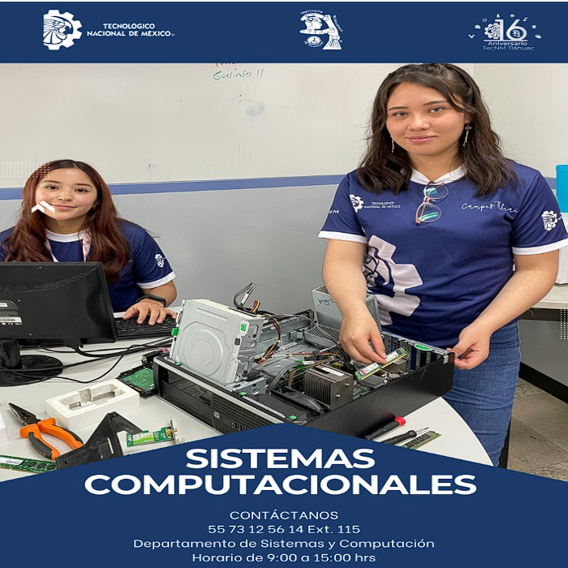

Podemos darle un vistazo al indice del Tecnm Tlahuac ❤️
"LA ESENCIA DE LA GRANDEZA RADICA EN LAS RAÍCES"
"

Podemos darle un vistazo al objetivo general del Tecnm Tlahuac ❤️
"LA ESENCIA DE LA GRANDEZA RADICA EN LAS RAÍCES"
OBJETIVO GENERAL
Formar profesionistas lideres, analíticos, críticos y creativos, con una visión estratégica y amplio sentido ético, capaces de
diseñar, implementar para aportar soluciones innovadoras en beneficio de la sociedad, en un contexto global, multidisciplinario y
sustentable.
El egresado desarrollará software para satisfacer las necesidades de diferentes sectores, aplicando metodologías ágiles y mejores
prácticas de Ing. de SW.
El egresado gestionará y coordinará equipos multidisciplinarios, integrando diversos saberes y disciplinas para atender las
necesidades del cliente, fomentando una visión colaborativa, ética, social y sustentable.
El egresado diseñará e implementará soluciones tecnológicas innovadoras, aplicando las mejores prácticas y promoviendo una cultura
de mejora continua para resolver problemas y generar valor en su entorno profesional.
El egresado contribuirá a la competitividad de los diferentes sectores, innovando y mejorando procedimientos orientados a las Tecnologías de la Información, con un enfoque ético y considerando el impacto ambiental y social en sus soluciones
Podemos darle un vistazo al perfil de ingreso de los Tecnm ❤️
"LA ESENCIA DE LA GRANDEZA RADICA EN LAS RAÍCES"
PERFIL DE INGRESO
Los aspirantes a estudiar este programa educativo deberán de haber cursado y acreditado el 100% de los estudios de nivel medio
superior, contar con competencias genéricas con conocimientos en Matemáticas, Física e Informática, es también conveniente que posea
conocimientos de inglés, así mismo, deberán contar con habilidades como pensamiento analítico y síntesis de información,
razonamiento lógico y expresión oral y escrita. Así como actitudes de respeto y responsabilidad. En caso de no contar con
competencias genéricas se solicita presentarse en el departamento de desarrollo académico para que le brinden información necesaria
para integrarse a un curso propedéutico para ser aspirantes de este programa educativo.
Podemos darle a el perfil de egreso del Tecnm Tlahuac ❤️
PERFIL DE EGRESO1.- Diseñar, configurar y administrar redes computacionales aplicando las normas y estándares vigentes.
2.- Desarrollar, implementar y administrar software de sistemas o de aplicación que cumpla con los estándares de calidad con el fin de apoyar la productividad y competitividad de las organizaciones.
3.- Coordinar y participar en proyectos interdisciplinarios.
4.- Diseñar e implementar interfaces hombre-máquina y máquina-máquina para la automatización de sistemas.
5.- Identificar y comprender las tecnologías de hardware para proponer, desarrollar y mantener aplicaciones eficientes.
6.- Diseñar, desarrollar y administrar bases de datos conforme a requerimientos definidos, normas organizacionales de manejo y seguridad de la información, utilizando tecnologías emergentes.
7.- Integrar soluciones computacionales con diferentes tecnologías, plataformas o dispositivos.
8.- Desarrollar una visión empresarial para detectar áreas de oportunidad que le permitan emprender y desarrollar proyectos aplicando las tecnologías de la información y comunicación.
9.- Desempeñar sus actividades profesionales considerando los aspectos legales, éticos, sociales y de desarrollo sustentable.
10.- Poseer habilidades metodológicas de investigación que fortalezcan el desarrollo cultural, científico y tecnológico en el ámbito de sistemas computacionales y disciplinas afines.
11.- Seleccionar y aplicar herramientas matemáticas para el modelado, diseño y desarrollo de tecnología computacional.
Podemos darle un vistazo a los atributos de egreso del Tecnm Tlahuac ❤️
ATRIBUTOS DE EGRESO1. Aplica conocimientos de matemáticas, computación e ingeniería de software para diseñar soluciones digitales escalables
en diversos entornos.
2. Analiza y soluciona problemas computacionales complejos mediante el uso de estructuras de datos, algoritmos y herramientas
avnzadas de desarrollo.
3. Diseña e implementa software y plataformas tecnológicas considerando usabilidad, accesibilidad, eficiencia y sostenibilidad.
4. Desarrolla investigación aplicada y experimentación en ingeniería de software y sistemas computacionales, utilizando métodos
científicos para innovar y mejorar soluciones tecnológicas.
5. Utiliza herramientas computacionales avanzadas y metodologías emergentes en el desarrollo de soluciones tecnológicas, asegurando
su pertinencia y eficiencia.
6. Evalúa el impacto de sus soluciones en el contexto global y social considerando factores ambientales, económicos y socioculturales en su desempeño profesional. 7. Toma decisiones profesionales con ética y responsabilidad social en aplicación de soluciones tecnológicas considerando la
sustentabilidad.
8. Gestiona y coordina equipos multidisciplinarios en el desarrollo de proyectos tecnológicos, fomentando una cultura de
colaboración y liderazgo.
9. Se comunica de manera efectiva en entornos técnicos y no técnicos, utilizando documentación fundamentada y estructurada
haciendo uso de herramientas digitales.
10. Integra conocimientos de gestión y planificación de proyectos de emprendimiento para la creación de soluciones tecnológicas
viables y competitivas.
11. Mantiene una actitud de aprendizaje permanente para adaptarse a los avances tecnológicos y tendencias emergentes en su campo
profesional.
Podemos darle un vistazo a los obketivos eduacionales del Tecnm ❤️
OBJETIVOS EDUCACIONALES1. El egresado desarrollará software para satisfacer las necesidades de diferentes sectores, aplicando metodologías ágiles y
mejores prácticas de ingeniería de software.
2. El egresado gestionará y coordinará equipos multidisciplinarios, integrando diversos saberes y disciplinas para atender las
El egresado gestionará y coordinará equipos multidisciplinarios, integrando diversos saberes y disciplinas para atender las
necesidades del cliente, fomentando una visión colaborativa, ética, social y sustentable.
3. El egresado diseñará e implementará soluciones tecnológicas innovadoras, aplicando las mejores prácticas y promoviendo una cultura
de mejora continua para resolver problemas y generar valor en su entorno profesional.
4. El egresado contribuirá a la competitividad de los diferentes sectores, innovando y mejorando procedimientos orientados a las
Tecnologías de la Información, con un enfoque ético y considerando el impacto ambiental y social en sus soluciones.
Podemos darle un vistazo a la reticula del Tecnm Tlahuac ❤️